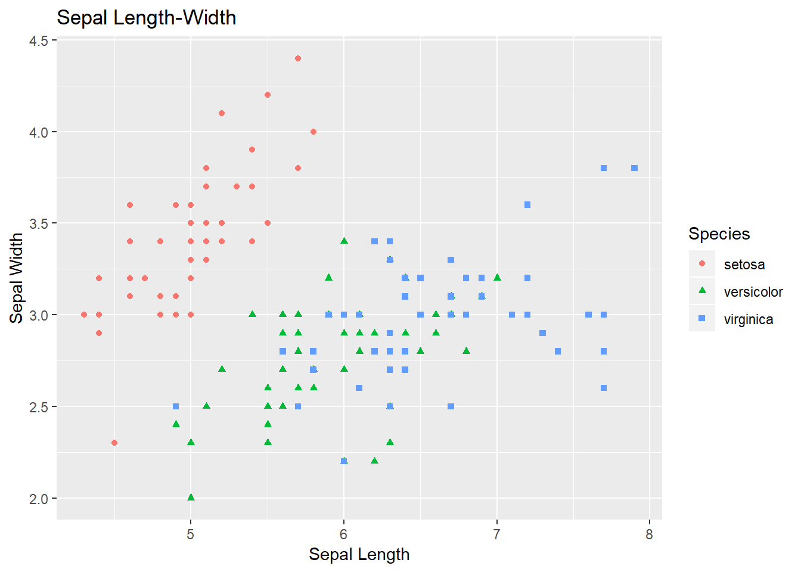

意思決定のための、ゼロからはじめる統計とデータ分析のお話
March 8, 2019
index
このページでは「意思決定のためのデータ分析」入門編として、機械学習をやってみたい、AI入門したい、あるいは、統計をゼロから学びたい、という方のために、統計やデータ分析の基礎を、わかりやすく、けれど、本質を損なわないようにお伝えしていきます。
データ分析と統計の基礎を学ぶことで、 - 未来を予測し、自分や相手、顧客の行動を制御する - いま、何が起きているのか。起きていることから、真実に迫る構造を抽出する ことが上達します。
筆者は、 - 慶應義塾大学 システムデザイン・マネジメントで行動科学の研究を行う、日常的にデータ分析を行う研究者であるとともに、 - ビジネスと経営のフィールドでも多くの提案を通し、人生の時間を賭けるに値すると感じる、様々なプロジェクトを実現してきました。 - 難しい行動科学の内容を一般向けにわかりやすく記載した「悩みにふりまわされて しんどいあなたへ」の著書があります。
また、統計やデータサイエンスまわりでは - 東京大学工学部で、卒論で三次元データを取り扱った - シンガポール国立大学のMBAプログラムで、Overallの成績4.7/5.0 - MITのオンラインプログラムData Analysis for Social Scientistsにて、Student TAとして選ばれる。 - New York Universityで Data Science for Businesを教えるProvost先生/統計の専門家Simonoff先生に師事 などのバックグラウンドがあります。
筆者はRとPythonを使いますが、こちらのGithubのリポジトリに利用するファイルをすべて置いておきます。環境構築には、RはR 3.5.2 と、RStudio、PythonはAnacondaのJupyter Notebookを使っています。
scatter <- ggplot(data=iris, aes(x = Sepal.Length, y = Sepal.Width))
scatter + geom_point(aes(color=Species, shape=Species)) +
xlab("Sepal Length") + ylab("Sepal Width") +
ggtitle("Sepal Length-Width")
対象読者
- 手元にあるデータから「真実」を見つけ出したい人
- これから統計に入門するヒト。機械学習とかAIとかの入り口にたった人
- 研究者で統計パッケージを使って分析ができるが「自分が本当には、何をしているのか？」を知りたい人
- p値が5%以下になったら、やったー！となる人
- とりあえず、anova()したらいいんでしょ、って思ってる人
- 統計を、楽しく、わかりやすく、理解したい人！
- 意思決定にデータを活かしたい人。データサイエンスに入門したい人
数式はこわくない
この統計分析では「数式」を使います。 数式について、苦手意識がある方は、この章をこのまま読み進めてから、本題に入ってください。 数式に苦手意識などないよ、という方は、早速第１章から入っていきましょう。
数式は「ラク」をするためにある
統計を学ぶ上で、「数式」は避けられません。 数式というと、苦手、難しそう、なんなら「得体が知れなくて怖い！」という方もいらっしゃるかもしれません。 しかし、数式は、実は「ラクをするために」あるのです、と言ったら、驚かれるでしょうか？
例えば、もしあなたが数式が苦手なら、
\[ \sum_{x=1}^{5} x \]
みたいなのは、できれば見たくないですよね。
ではぎゃくに、こういうのを見るとどうでしょう？ \[ いち たす に たす さん たす よん たす ご \]
さすがに、
\[ 1+2+3+4+5 \] と書いてよね、まどろっこしいなあ。などと、思われるのではないでしょうか。
実は、本質的には、すべての数学の記号は、これと同じ。長い言葉を省略しているに過ぎません。
難しいのではなく、知らない
だから、数式を見たら、一度それを「日本語へ翻訳」してみてください。 たとえば、先程みた
\[ \sum_{x=1}^{5} x \] この数式は、 \[ 1から5まで、順番に足していって。つまり、1+2+3+4+5をして！ \]
という「日本語へ翻訳」できます。
日本語へ翻訳できないこ時、それは 数式が難しいのではなく、あなたがその数式を知らないだけなのです。 知識がない時、必要なのは落ち込むことではなく、調べることです。知ることです。
もっと言えば、大事なことは「数式に慣れる」ことです。 わたしたちは、本当にはよく分からなくても、見慣れているものを「わかる」と思う生き物です。
例えば、いつも使っている携帯電話は、統計で学ぶひとつひとつの数式に比べると、 高度なテクノロジーの塊で、とても難しいはずです。
けれど「なぜ、そのボタンを押すと、遠く離れたヒトと話ができるという、魔術的なことが起きるのか？？う～～ん、まったくわからん。俺は頭が悪いのだろうか。。」と落ち込むことなどなく、自然に使いこなしているはずです。
数式は、むしろ「語学」だと思って、むかし英語の単語帳を何度も見て覚えたように、 そして今では「Pen」という単語を見ると、「なんだっけ、えーと、確か、ペンだな」などと思うことなく、 「Pen」が指し示すものを、１秒のタイムラグもなく理解できるように、 統計の数式にも、時間をかけて、何度も見て、慣れていくことが大切です。
新しい英単語を、一度見てすぐに使えるようにならないのと同じように、 新しい数式に、時間をかけて慣れ親しんでいきましょう。